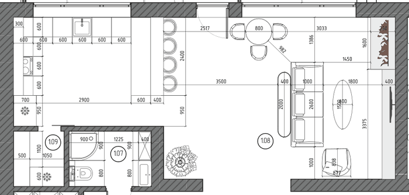

1.08
Кухня-гостиная
{kind=link}
{kind=link}
{kind=link}
{kind=link}
{kind=link}
{kind=link}
Замысел
Единое пространство кухни, столовой и гостиной под высоким потолком с открытой балкой. Кухня в тёмном орехе с вертикальным рифлением и светлым камнем столешниц, полуостров с барными местами и подвесами над ним. В гостиной — диван на дубовом основании перед камином с телевизором, круглый стол с креслами у панорамного остекления на террасу. Вечером включаются встроенный свет, три кольца над столом, подвесы над полуостровом и скрытая подсветка рабочей поверхности и цоколя кухни.
Что здесь нарисовано
Рядом с каждым предметом — что это в жизни: изделие производителя, вещь на заказ или позиция, которая ещё подбирается.
Кухня
На заказ — изготавливается по чертежам, техника подбирается
- Кухонный ряд Нижние модули по 600 мм и пенал холодильника; тёмный орех с вертикальным рифлением, светлая каменная столешница
- Полуостров Со стороны гостиной — четыре барных места2400 × 1000 × 900 мм
- Навесные шкафы Четыре, тёмный орех; референс Modulnova VerticalРеференс
- Вытяжка Miele DAS 2620, встроена в шкаф над плитойИзделие производителя596 × 273 ммСтраница производителя
- Техника Холодильник, духовой шкаф, индукционная панель, посудомоечная машина, чёрная мойка и смесительПодбирается
Столовая и бар
Подбирается — образ и размеры зафиксированы, конкретные изделия выбираются
- Барные стулья 4 шт., бежево-коричневая обивка, деревянное сиденье, тёмные ножки
- Круглый стол Тёмная бордово-коричневая столешница, чёрное подстольеØ 800 мм
- Обеденные кресла 3 шт., коньячная кожа, светлое дерево
Гостиная
Подбирается — образ и размеры зафиксированы, конкретные изделия выбираются
- Диван На дубовом основании, кремовая обивка букле2600 × 1000 мм
- Консоль за диваном Светлая каменная столешница, деревянная полка2000 × 400 × 700 мм
- Журнальный стол Овальный, светлая столешница, деревянное подстолье1500 × 600 мм
- Кресло Светлая обивка, деревянный каркас
- Тумба под телевизор Дерево, тёмные детали3375 × 400 × 460 мм
- Телевизор Диагональ 98 дюймов, модель не выбрана
- Акустика Sonus faber Lumina II, 2 шт.Изделие производителяСтраница производителя
- Камин Короб до потолка со светлой штукатуркой; топка подбирается1600 × 750 мм
Свет
Подбирается — место и тип зафиксированы, комплекты уточняются
- Встроенные светильники 27 шт., тёплый свет; референс Flos Light Shadow ProРеференс
- Подвесы над полуостровом 4 шт., чёрные; референс HAY CompassРеференс
- Кольца над столом Три, Ø 600, 800 и 1000 мм; образ Panzeri Zero RoundРеференс
- Подсветка кухни Скрытые линии тёплого света под навесными шкафами и в цоколе — новое предложение
Отделка
Подбирается — направление зафиксировано, материалы и образцы подбираются
- Пол Единая светлая серо-бежевая поверхность под камень; по проекту кухня — плитка, гостиная — ламинат: материал и граница требуют решения
- Стены Тёплая песочно-бежевая и белая окраска; акцентная стена у кухни в тёмном тёплом тоне
- Потолок и балка Тёплый белый потолок; балка — тёмный металл
Растение в кашпо — антураж; шторы, ковры и декор в этой версии не показаны.
По проекту

- 50,73 м², Г-образный контур; кухня у западной стены, гостиная у остекления и камина
- Потолок из двух скатов, высота от 3,95 до 5,43 м; открытая стальная балка
- Панорамное остекление в сторону террасы и сада; проём в холл 1.04
- Камин с коробом до потолка и собственным дымоходом; телевизор 98 дюймов
- Освещение по проекту: 27 встроенных светильников, 4 подвеса над полуостровом, 3 кольца над столом